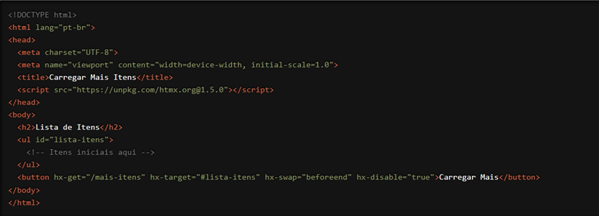

Estamos empolgados em apresentar uma funcionalidade útil e prática do HTMX que ajuda a melhorar a experiência do usuário em suas aplicações web: o atributo `hx-disable`. Com `hx-disable`, você pode controlar quando um elemento deve ser desativado durante uma requisição HTTP, prevenindo ações duplicadas e proporcionando uma interação mais eficiente e segura. Vamos explorar como essa funcionalidade pode elevar o nível das suas aplicações web.
O que é o atributo `hx-disable`?
O `hx-disable` é um atributo do HTMX que permite desativar um elemento enquanto uma requisição HTTP está em andamento. Isso é especialmente útil para evitar que os usuários realizem ações repetidas, como clicar várias vezes em um botão de envio de formulário, o que poderia resultar em múltiplas requisições indesejadas. O `hx-disable` garante que o elemento especificado seja desativado durante a requisição e reativado após a conclusão, proporcionando uma experiência de usuário mais controlada e segura.
Como Funciona?
Vamos ver um exemplo prático para entender melhor como o `hx-disable` pode ser usado. Suponha que você tenha um formulário de login e deseja desativar o botão de envio enquanto a requisição de autenticação está sendo processada:

Neste exemplo, o botão "Carregar Mais" é desativado automaticamente quando o usuário clica nele para carregar mais itens (requisição HTTP GET para a URL "/mais-itens"). O botão é reativado assim que a requisição é concluída, prevenindo que o usuário clique repetidamente enquanto os novos itens estão sendo carregados.